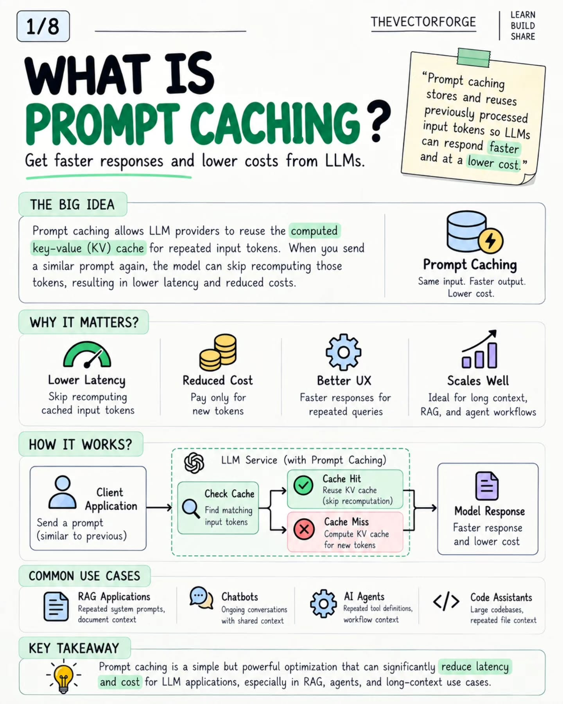
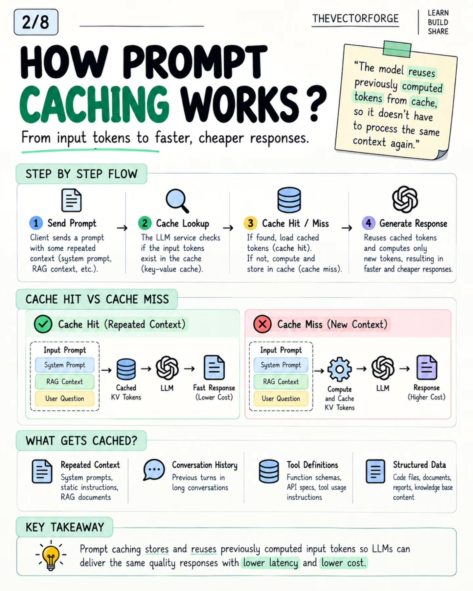
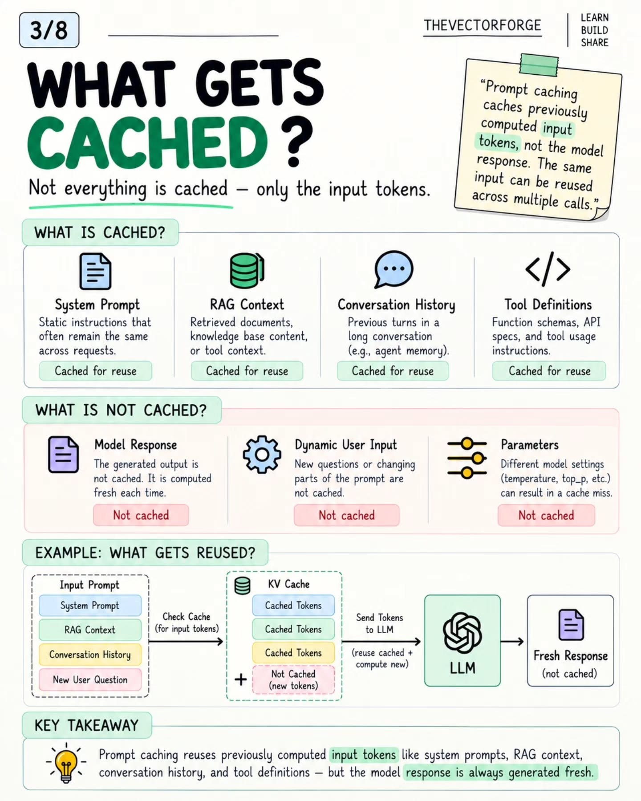
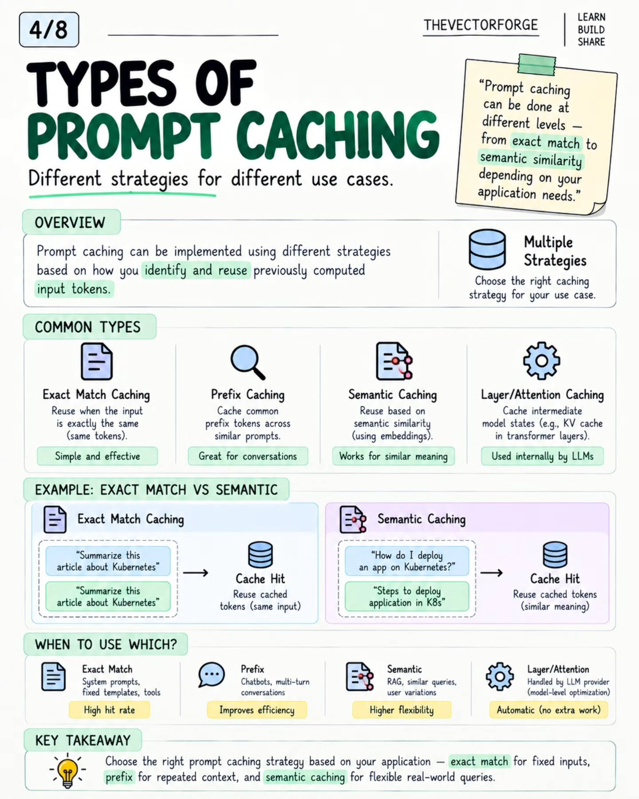
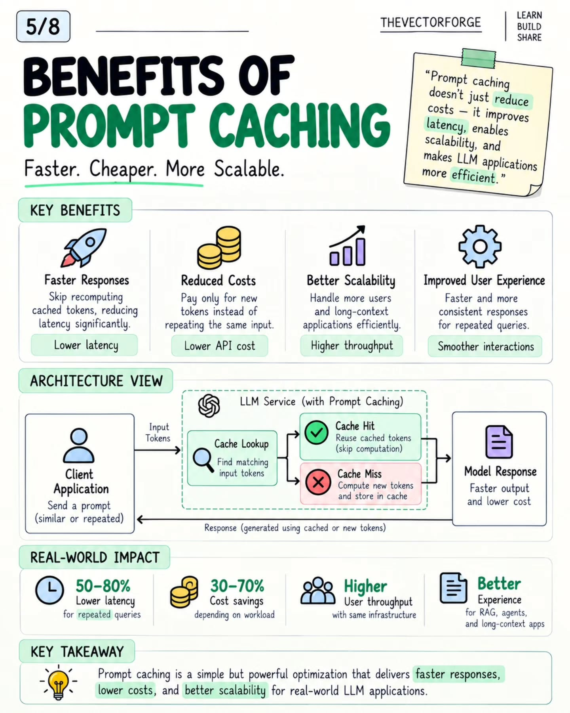
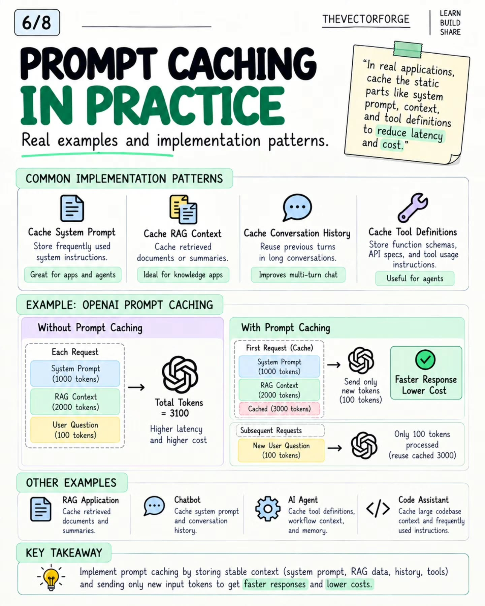
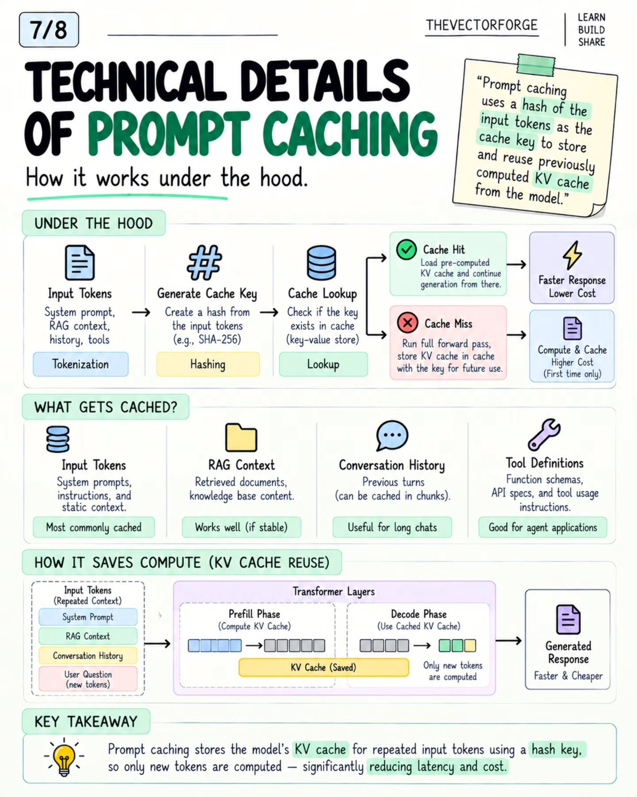
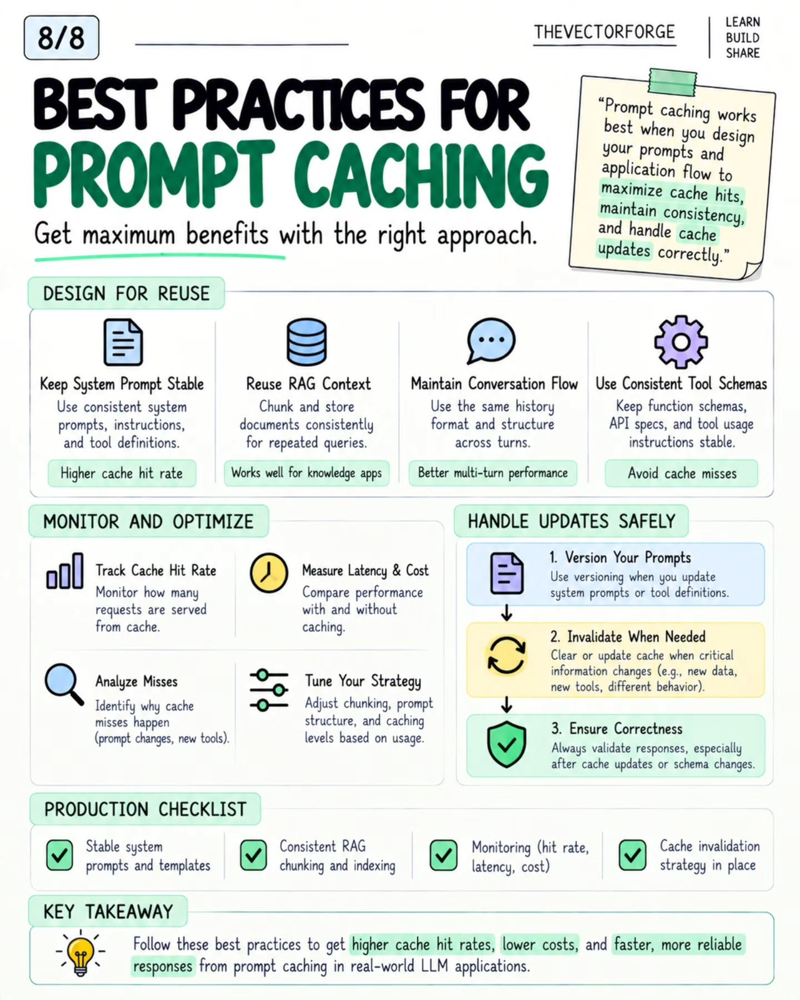

Prompt Caching: the complete playbook
What this is: an 8-slide infographic carousel by @thevectorforge (TheVectorForge, Backend and AI, Oct 1, 2026) — the full walkthrough: what prompt caching is, the hit/miss flow, what gets cached and what doesn't, the four cache types, benefits with numbers, implementation patterns with a worked OpenAI example, the under-the-hood mechanics, and a production checklist. All eight infographics are saved below, in carousel order. Distilled here in my own words.
Related: The Tokenomics Playbook (this page is the full treatment of the caching lever) · 20 AI inference engineering concepts (concept 7 — prefix caching — is the provider-side twin) · the Copilot shared-cache entry (96.22% hit rate, cross-user caching as CDN behavior)
Thesis for the playbook: prompt caching is where context hygiene turns into money. Every token your system re-sends instead of re-computing is a token you buy at the cached price — and cached input is priced far below fresh input (Mistral's current preview pricing: $0.68/M fresh in, $0.07/M cached in — roughly 10×). The lever is configuration, not a product: zero spend, and it stacks with everything else.
1 · What prompt caching is
Providers reuse the computed key-value (KV) cache for repeated input tokens instead of recomputing them. Send a similar prompt again, the model skips recomputing the repeated part — lower latency, lower cost. Four benefits the carousel names: lower latency (skip recomputing cached tokens), reduced cost (pay only for new tokens), better UX (faster repeated queries), and scalability (long context, RAG, and agent workflows — the workloads where the repeated part is the big part). The mechanism in one loop: client sends a prompt → provider checks the cache → hit (reuse KV, skip recomputation) or miss (compute and store) → response. The natural homes: RAG apps (repeated system prompt + documents), chatbots (ongoing conversations), AI agents (repeated tool definitions), code assistants (repeated codebase context).

2 · The hit/miss flow
Four steps: (1) client sends a prompt with repeated context — system prompt, RAG context, conversation history; (2) the provider looks up those input tokens in the KV cache; (3) hit → load cached tokens and generate, miss → compute the full forward pass and store the result for next time; (4) the response, faster and cheaper on hits. The side-by-side makes the economics visible: the same three-block prompt (system prompt + RAG context + user question) costs the full compute on a miss and only the delta on a hit. What the carousel says gets cached: repeated context (system prompts, static instructions, RAG documents), conversation history (previous turns), tool definitions (function schemas, API specs), structured data (code files, documents, knowledge-base content).

3 · The boundary: what gets cached vs what doesn't
The line the carousel draws matters more than the list: only input tokens are cached — the model response is always generated fresh. Cached: system prompt, RAG context, conversation history, tool definitions. Not cached: the generated response (computed fresh every time), dynamic user input (new questions), and — the one that bites — parameters: changing temperature or top_p between calls can produce a cache miss. The worked example: a prompt of system prompt + RAG context + conversation history + a new user question reuses the cached tokens for the first three blocks and computes only the new question.

4 · Four types, and when to use each
- Exact match — reuse when the input is byte-identical. Best for system prompts, fixed templates, tool definitions. Highest hit rate, simplest.
- Prefix — cache the common prefix tokens shared across similar prompts. The chatbot/multi-turn answer: each new turn reuses the conversation so far.
- Semantic — match on embedding similarity instead of token identity, so differently-worded questions with the same meaning hit. The RAG/flexible-query option — more flexibility, more machinery.
- Layer/attention — cache intermediate model states inside the transformer layers. Handled by the provider as a model-level optimization; automatic, nothing to configure.
The carousel's decision rule: exact match for fixed inputs, prefix for repeated context, semantic for flexible real-world queries. Its example pair: two identical "Summarize this article about Kubernetes" prompts hit on exact match; "How do I deploy an app on Kubernetes?" vs "Steps to deploy application in K8s" hit on semantic similarity.

5 · Benefits, with numbers
Faster responses (skip recomputation), reduced costs (pay only for new tokens), better scalability (more users, same infrastructure), better UX (faster, more consistent repeated queries). The carousel's claimed ranges: 50–80% lower latency for repeated queries, 30–70% cost savings depending on workload — plus higher user throughput on the same infrastructure and the best experience gains in RAG, agents, and long-context apps. (On the honesty of these ranges: see the scoring section below.)

6 · In practice: the four patterns and the OpenAI example
The four implementation patterns, each a stable block at the front of the prompt: cache the system prompt (apps and agents), cache RAG context (retrieved documents or summaries — knowledge apps), cache conversation history (previous turns — multi-turn chat), cache tool definitions (function schemas, API specs — agents). The worked OpenAI example is the money diagram: without caching, every request reprocesses 3,100 tokens (1,000 system + 2,000 RAG + 100 question) at full latency and cost. With caching, the first request stores 3,000 cached tokens; every subsequent request sends only the 100 new question tokens and reuses the 3,000. That 31× reduction on the repeated portion is the arithmetic behind every "why does our agent bill drop" story.

7 · Under the hood
The mechanism: input tokens (system prompt, RAG context, history, tools) → tokenize → hash the tokens (e.g., SHA-256) as the cache key → look up in a key-value store. Hit: load the precomputed KV cache and continue generation from there. Miss: run the full forward pass, store the KV cache under the key for next time (the higher-cost path, paid once). The transformer-level view shows why it saves compute: in the prefill phase the model computes the KV cache for the repeated context; in the decode phase it reuses the saved cache and computes only the new tokens. One practical note the carousel adds: conversation history can be cached in chunks, not just as one monolith.

8 · Best practices and the production checklist
- Design for reuse. Keep the system prompt stable (consistent instructions + tool definitions = higher hit rate). Chunk and store RAG documents consistently for repeated queries. Keep the same history format and structure across turns. Keep function schemas and API specs stable — churn here is the silent hit-rate killer.
- Monitor and optimize. Track the cache hit rate (the metric that matters alongside the bill), measure latency and cost with vs without caching, analyze why misses happen (prompt changes, new tools), and tune chunking, prompt structure, and caching levels from real usage.
- Handle updates safely. Version your prompts when system prompts or tool definitions change; invalidate the cache when critical information changes (new data, new tools, different behavior); validate responses after cache updates or schema changes — correctness first.
- Production checklist. Stable system prompts and templates · consistent RAG chunking and indexing · monitoring (hit rate, latency, cost) · a cache invalidation strategy in place.
Tokenomics / enterprise angle
- The 3100→100 diagram is the ROI slide for the caching lever. In long-context agent workloads the static portion dominates — system prompt, retrieved docs, tool definitions — and it's the part caching erases from the bill. Cached-input pricing (~10× cheaper at current Mistral preview rates) turns that static portion from the biggest cost line into a rounding error.
- Hit rate is the metric; byte-stability is the mechanism. Every practice on slide 8 reduces to one rule: make the repeated part byte-identical across calls. Stable prefix first, changing content last (the same rule as prefix caching in the inference deep dive). A timestamp, a reordered tool list, or a tweaked system prompt defeats hits silently — which is why "track hit rate alongside token savings" is the production nuance the carousel's own commenters raised.
- Tool definitions are the sleeper. Agent systems re-send function schemas and API specs on every call; they're large, static, and almost never audited for cacheability. Moving them into the cached prefix is the cheapest win on slide 6's list.
- Version your prompts like you version code. The invalidation guidance (version prompts, invalidate on material change, validate after) is the operational half most teams skip — a stale cache serving outdated instructions is worse than no cache, because the bill looks great while the answers rot.
Honest scoring
This is an educational carousel, not a benchmark. The headline ranges — 50–80% lower latency, 30–70% cost savings — are unattributed and workload-dependent; treat them as directional, and measure your own hit rate before quoting savings. The mechanics are accurately described (hash-keyed KV cache, prefix ordering, parameter changes breaking hits, chunked history caching). One simplification worth flagging: the carousel presents semantic caching as reusing cached input tokens for similar-meaning queries — in practice, semantic caching usually caches responses (the answer to a similar question), not input KV state. The input-token caching it describes is really exact-match/prefix territory. The OpenAI 3100→100 example is a worked illustration of the arithmetic, not a measured benchmark. Solid as a design guide; verify the numbers on your own traffic.
Source: https://www.instagram.com/p/Dd-ru0KElPo/ (@thevectorforge, Oct 1, 2026)